About
전공 소개
공공디자인은 시설물을 예쁘게 만드는 일이 아니라, 사회가 필요로 하는 가치를 발견하고 검증하고 확산하는 일입니다.
2018년 신설된 홍익대학교 공공디자인전공은 공공디자인 계획, 공공 공간·시설·시각 디자인, 공공디자인 행정과 정책, 문화전략 전반을 다룹니다. 공공서비스디자인과 사회문제해결디자인, 사회혁신디자인까지, 디자인으로 사회를 바꾸는 사회디자인(Social Design)의 영역을 대학원 석사·박사 과정에서 연구합니다. 2019년 문을 연 공공디자인연구센터와 함께 수업에서 시작한 연구를 실제 도시의 프로젝트로 옮기고, 그 결과를 정책과 교육으로 되돌려 보냅니다.
우리는 스스로를 무언가를 만드는 사람(Makers)이 아니라 디자인으로 공공가치를 증명하는 사람(Valuers)이라고 정의합니다.
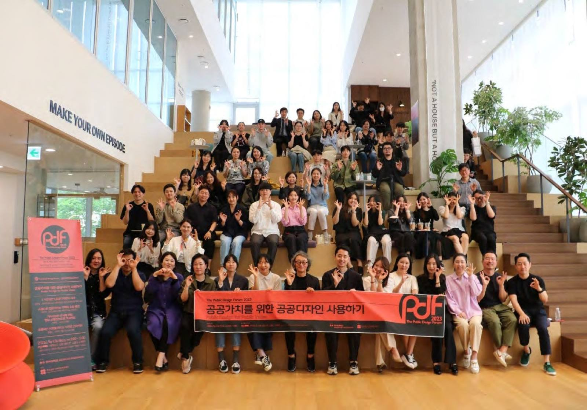
연구와 실천의 연결
수업 연구가 연구센터를 거쳐 지자체·공공기관과의 실제 프로젝트로 이어집니다.
증거 기반 디자인
설치 전후를 비교해 측정하는 준실험 설계로, 디자인의 사회적 효과를 숫자로 확인합니다.
거버넌스 중심
정부·지자체·기업·시민을 잇는 PDG(Public Design Governance) 모델로 UNESCO ESD 인증을 받았습니다.
국제 네트워크
DESIS Network, 국제공공디자인포럼 IPDF, 대만·중국·일본·프랑스 파트너와 교류합니다.
Vision & Six Strategies
홍익대 공공디자인의 6대 전략
의제를 발견하고, 방법을 연구하고, 현장에서 실험하고, 사람과 기관을 연결하고, 다음 세대를 교육하고, 성과를 사회로 확산합니다. 확산된 성과는 다시 새로운 의제가 됩니다.
Discover
발견포럼·페스티벌·뉴스레터로 아직 이름 없는 사회문제를 먼저 포착합니다.
Research
연구결과물이 아닌 문제해결의 방법론을 연구합니다.
Experiment
실험실제 도시와 일상에서 디자인의 효과를 검증합니다.
Connect
연결공공·민간·시민·학계의 협력 구조를 설계합니다.
Educate
교육차세대 전문가와 공공디자인 행정가를 기릅니다.
Share
확산포럼·출판·아카이브로 성과를 사회에 돌려줍니다.
↻ Share에서 다시 Discover로. 공공디자인연구센터 비전 「디자인을 수단으로 공공가치를 생성하는 가치지능(Value Intelligence)」
Faculty
교수진
공간디자인, 도시설계, 조경·어버니즘, 건축, 건축이론, 산업디자인까지. 서로 다른 전문 분야가 하나의 공공 의제를 함께 다룹니다.
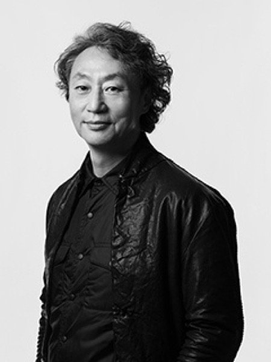
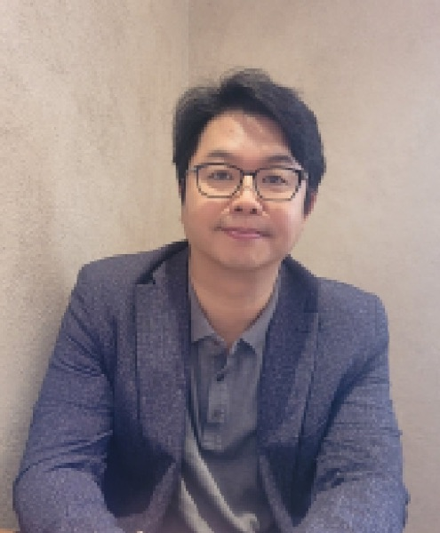
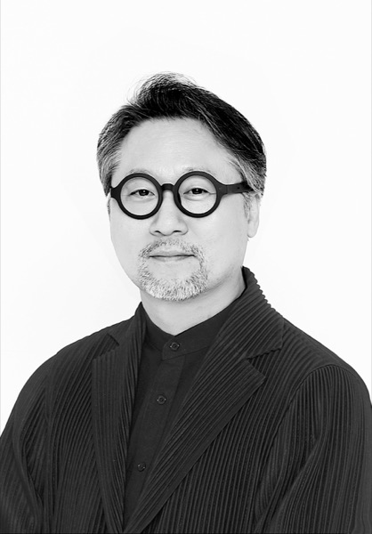
이현성교수
Landscape Urbanism
- 공학석사 · Kingston Univ. London
- 홍문관(R동) 1207-1호
- 02-320-2240
- armula@hongik.ac.kr
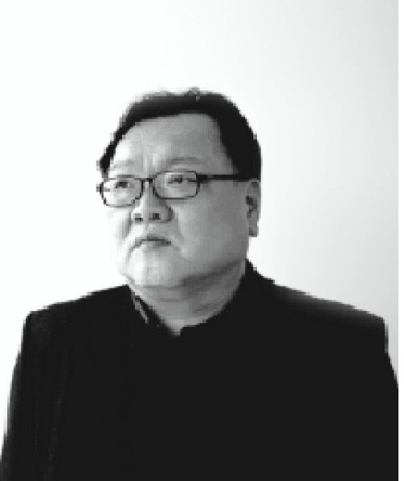
정재희부교수
Industrial Design
- 디자인학박사 · Bergische Univ. (Wuppertal)
- 홍문관(R동) 1403호
- 02-320-2225
- jaehee.chung@hongik.ac.kr
Research Center
공공디자인
연구센터
학문적 연구를 사회에 실현하는 플랫폼. 석·박사 연구원이 실제 용역과 실험에 참여합니다.
연구 분야 보기 → 연구센터 Blog 바로가기 ↗Projects
디자인이 바꾼 것들
공공디자인의 결과는 ‘무엇을 만들었나’가 아니라 ‘무엇이 달라졌나’로 말합니다. 각 프로젝트를 사회문제, 디자인 접근, 실제 변화의 순서로 소개합니다.
사회문제→디자인 접근→실제 변화
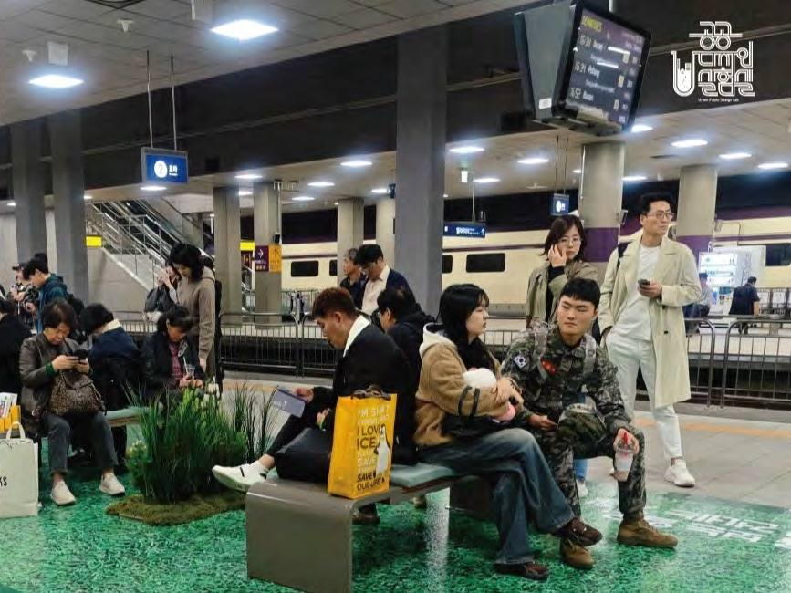
공공디자인 실험실 · 2025The Public Sticker
아무도 앉지 않던 대기공간
사회문제
역사 안의 대기공간은 있었지만 사람들은 머물지 않았습니다. 사용성이 낮은 공간은 공공 자원의 낭비입니다.
디자인 접근
바닥에 붙이는 모듈형 그래픽과 식재, 공공정보를 조합해 적은 비용으로 공간의 성격을 바꾸는 ‘Design as Nudge’ 실험.
실제 변화
같은 시간대 공간 사용 빈도를 설치 전후로 비교 측정했습니다.
11 → 34설치 전후 이용 건수
이용성 약 3배 증가
이용성 약 3배 증가
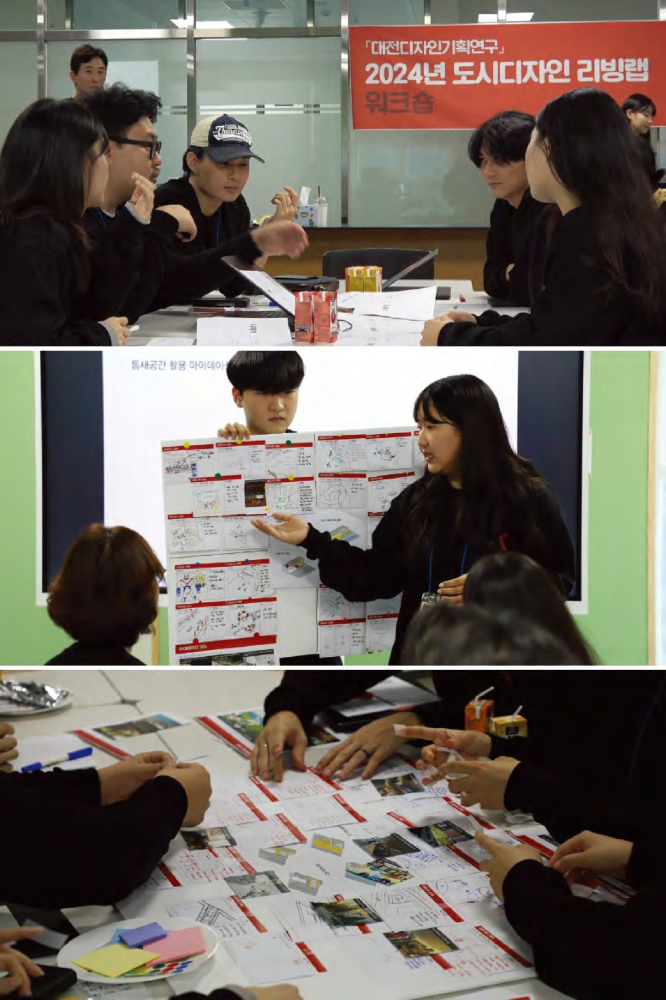
공공서비스디자인 · 2024모두의 순찰대
혼자 사는 사람들의 안전망
사회문제
1인 가구 비율이 높은 동네에서 생활 안전과 사회적 고립이 함께 커지고 있었습니다.
디자인 접근
시민 9명, 파주시 공무원, 경찰 범죄예방 담당관이 함께한 9회의 워크숍과 주민 인터뷰로 서비스를 설계하고, 동산길 범죄예방디자인과 연계했습니다.
실제 변화
반려인·장년 1인 가구·지역상점이 함께 순찰하는 주민 안전망이 만들어졌고, 파주시가 다른 지역 확대를 검토하고 있습니다.
행안부장관상행정안전부 공공서비스디자인
우수과제 선정
우수과제 선정
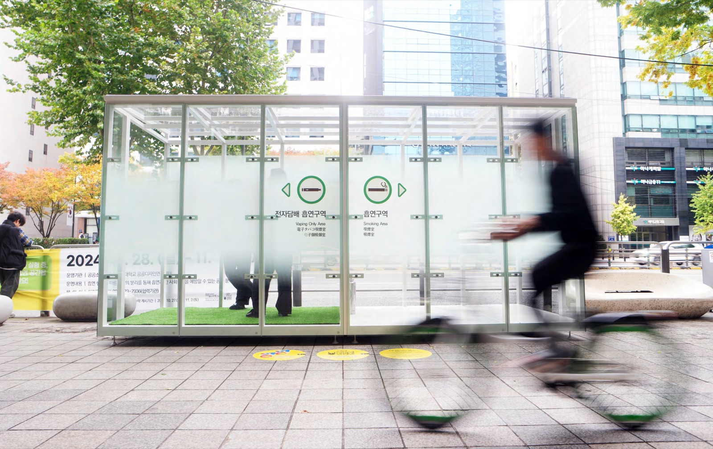
사회갈등 예방 · 2023–2024분리형 흡연공간
갈등을 디자인으로 줄이다
사회문제
강남역 일대처럼 사람이 몰리는 곳의 길거리 흡연은 흡연자와 비흡연자 사이의 반복되는 갈등이었습니다.
디자인 접근
‘사회갈등 예방을 위한 디자인’ 포럼에서 의제를 공론화한 뒤, 연기와 시선을 분리하는 흡연부스를 실제 거리에 실험 설치했습니다.
실제 변화
실험 결과를 바탕으로 ‘분리형 흡연부스’ 디자인 매뉴얼을 개발해 다른 지자체도 적용할 수 있게 했습니다.
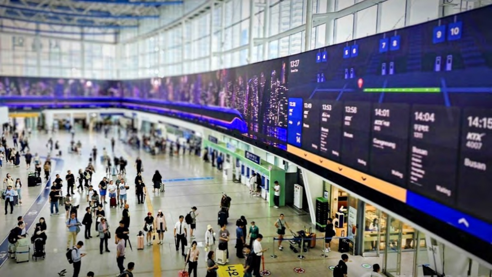
공공매체 · 2024–2026Platform 111
서울역의 정보와 광고를 다시 짜다
사회문제
하루 수십만 명이 오가는 서울역에서 광고와 안내 정보가 뒤섞여, 정작 필요한 정보를 찾기 어려웠습니다.
디자인 접근
역사 전체의 매체를 조사해 광고와 공공정보의 위계를 정리하는 공공매체 마스터플랜과 미디어 디자인을 수립했습니다.
실제 변화
서울역 모델이 KTX 부산역·용산역 광고매체 리뉴얼로 이어졌습니다.
2026 대상대한민국 공공디자인대상
진흥원장상 수상
진흥원장상 수상
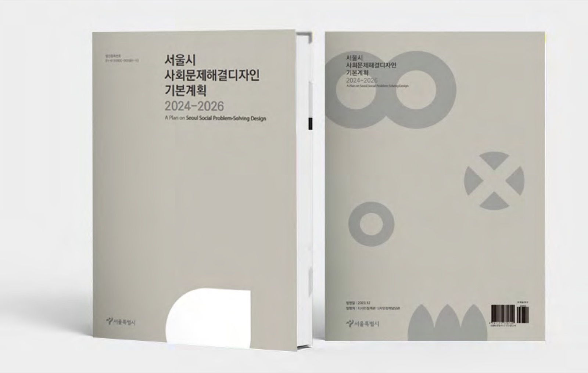
정책 · 2024
서울시 사회문제해결디자인 기본계획
5대 유형, 16개 혁신형 디자인 사업으로 구성한 서울시 2차 계획을 수립했습니다.
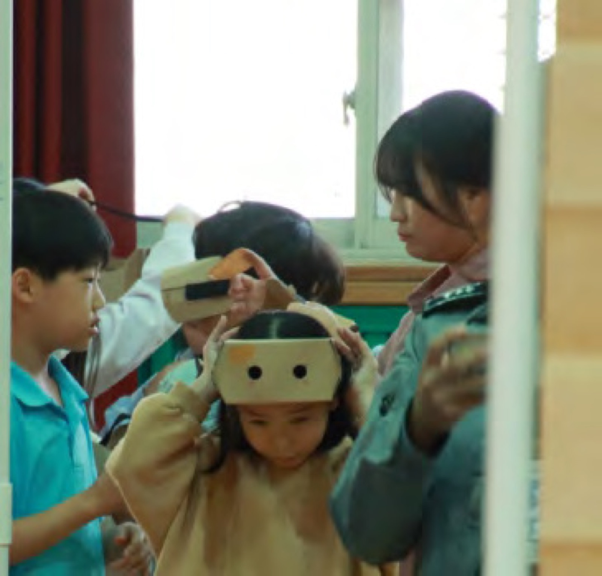
U.S.R · 공심이
도리도리 프로젝트
공심이, 함께걷기 사회적협동조합, 인천미추홀경찰서가 아이들과 함께한 시민참여 프로젝트입니다.
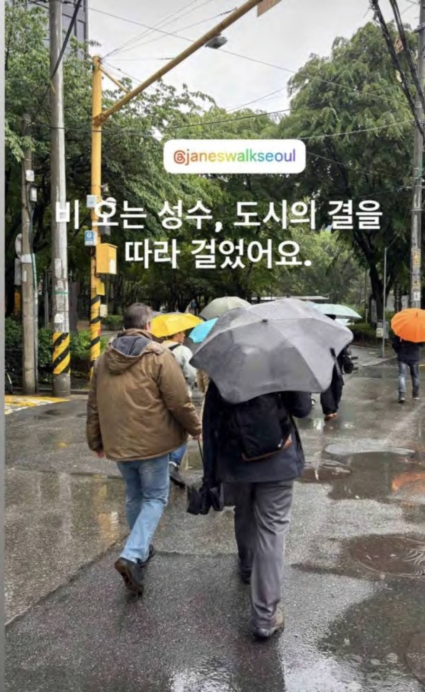
시민참여 · 2025
Jane’s Walk Seoul
시민이 함께 걸으며 도시 공간을 관찰하고 다시 해석하는 워크숍입니다.
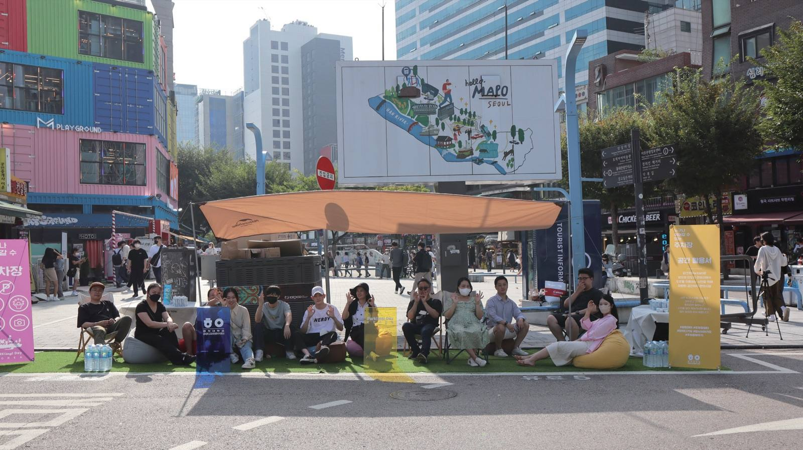
Tactical Urbanism
Park(ing) Day
주차 한 칸을 하루 동안 시민의 공간으로 바꾸는 국제 도시 실험에 한국 대표로 참여했습니다.
Impact in Numbers
숫자로 보는 홍익 공공디자인
0연구센터 수행 프로젝트2019–2025
0공공디자인 뉴스레터 발행The Public Design 365 · 호 이상
0대한민국 공공디자인대상 수상 연도2019·2020·2022·2023·2024·2026
0DESIS Network 참여 기관32개국 대학·연구소와 함께
Research
연구 분야
대학원 학위논문, 교수진의 학술 연구, 정책 연구와 디자인 R&D가 여섯 영역을 가로지릅니다. 사회문제해결디자인, 공공서비스디자인, 증거 기반의 혁신디자인 방법론으로 공공 영역의 문제를 풉니다.
정책 · 제도
공공디자인 진흥계획과 기본계획을 수립합니다.
- 강남구·송파구 공공디자인 진흥계획
- 인천광역시 도시디자인진흥계획
- 2025 공공디자인 혁신지원 기본계획
사회문제해결
안전, 고립, 갈등, 고령화 문제를 가설 → 실험 → 관찰 → 정책의 순서로 다룹니다.
- 서울시 사회문제해결디자인 기본계획
- 사회갈등 예방 디자인
안전 R&D
일상의 안전을 설계하는 공공안전디자인 원칙을 연구합니다.
- K-지하고속도로 R&D (한국건설기술연구원)
- 산업안전디자인 표준 개발 (KIDP)
- HD현대 글로벌 R&D센터 Safephilic 연구
건강 · 복지
공공디자인과 건강복지가 만나는 사회적 처방을 실증합니다.
- 수원시립미술관 웰니스 프로그램 「마인딩」
- 사회적 녹색 처방 Green Prescribing
- 문체부 ‘멘탈케어디자인’ 실증연구
공공매체 · 웨이파인딩
역사와 공공공간의 정보·광고 체계를 설계합니다.
- KTX 서울역 공공매체 마스터플랜
- 부산역·용산역 광고매체 리뉴얼
- 강원랜드 UX·XI 개선 연구
보행 · 도시공간
사람 중심의 가로와 머무는 공공공간(Street as Place)을 연구합니다.
- 보행환경 디자인과 실증 연구 방법론
- Walkable 향교로 특화 가로 연구
- 교량 경관·특화거리 설계
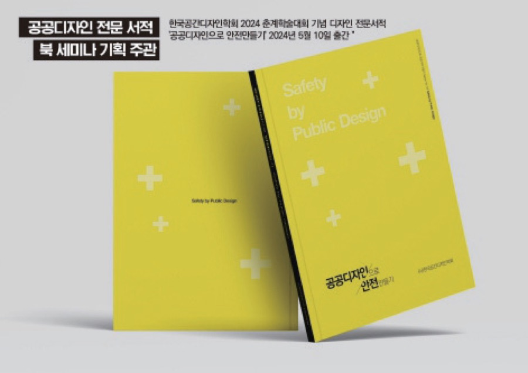
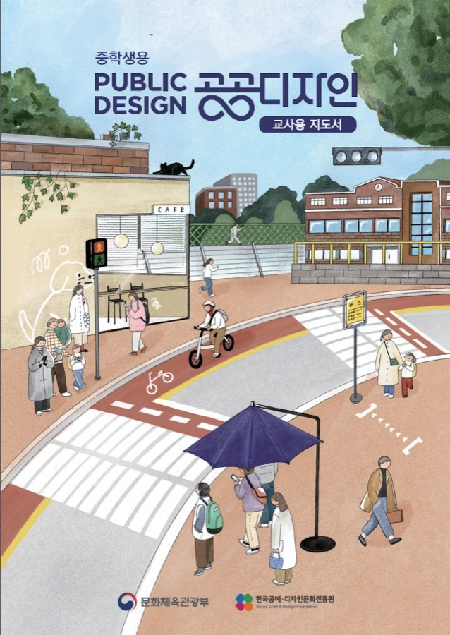
Publications
논문 · 출판
- 2024『공공디자인으로 안전만들기』한국공간디자인학회 · 미세움 · 14명의 전문가가 쓴 안전디자인 이야기
- 2020–『공공디자인 전문가 직무 교과서』한국공예·디자인문화진흥원 · 2025 문화체육관광부 리뉴얼
- 2020–The Public Design 365대한민국 최초 공공디자인 전문 뉴스레터 · 2024년 100호 발간
- 2021–Public Design Agenda정례 세미나 발제를 모은 공공디자인 의제집
- 2018–Public Design Promenade공공디자인 수업 연구결과집
- 2021공공디자인 중등 교과서 집필 연구문화체육관광부
Curriculum
교육과정
산업미술대학원 석사과정은 공공디자인의 기획·정책·실무 역량을, 대학원 디자인공예학과 박사과정은 공공디자인을 이끌 연구자와 리더십을 기릅니다.
산업미술대학원
공공디자인전공 석사
공공디자인 개론에서 시작해 스튜디오, 거버넌스, 정책·행정, 서비스디자인, 유니버설·안전디자인까지. 이론을 배우고 스튜디오에서 도시에 적용해 보는 과정입니다. 종합시험은 공공디자인기획론과 공공디자인정책·행정론으로 봅니다.
대학원 디자인공예학과
공공디자인 박사
2016년 「공공디자인의 진흥에 관한 법률」 제정 이후 커진 공공디자인 정책과 행정의 수요에 맞춰, 평가·경제학·거버넌스·ESG까지 공공디자인을 이끌 연구자를 기르는 과정입니다.
Seminars & Lectures
공공의제 세미나
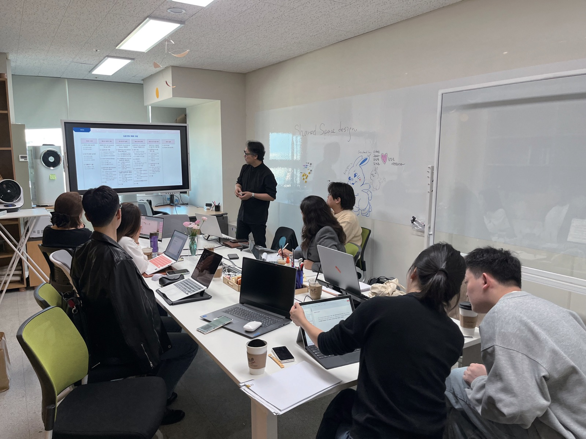
개강·종강 세미나와 콜로키움
매 학기 연구 주제를 발표하고 토론합니다. 2026-1학기 주제는 「PUBLIC DESIGN SIX PERSPECTIVES: 다음의 공공성」.
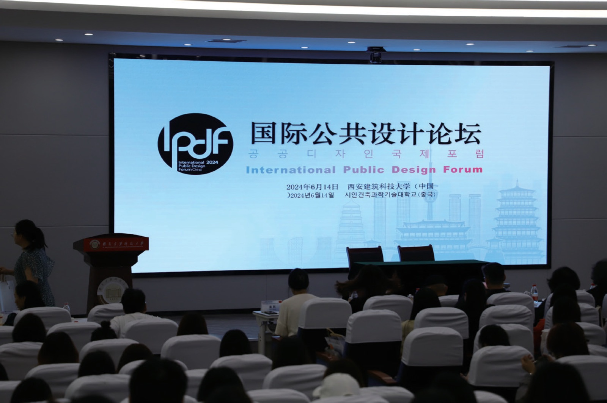
포럼과 국제 특강
공공디자인포럼 PDF X, 국제공공디자인포럼 IPDF에서 에이스케 다치카와, 쿠츠나 히로키 등 국내외 연사를 만납니다.
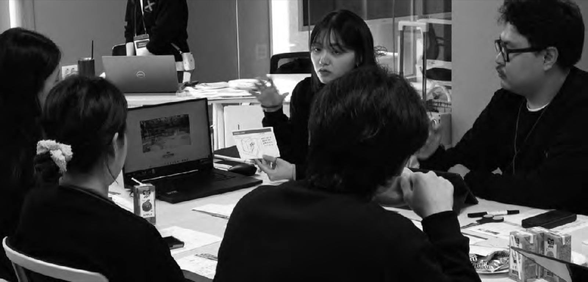
학술답사와 국제 워크숍
상하이, 도쿄, 2025 오사카 엑스포 학술답사와 한·중·일 대학 연합 워크숍으로 현장을 봅니다.
People
사람들
디자이너, 건축가, 공무원, 연구자, 의료·복지 전문가까지. 서로 다른 배경의 원우들이 같은 질문을 붙잡고 함께 연구합니다.
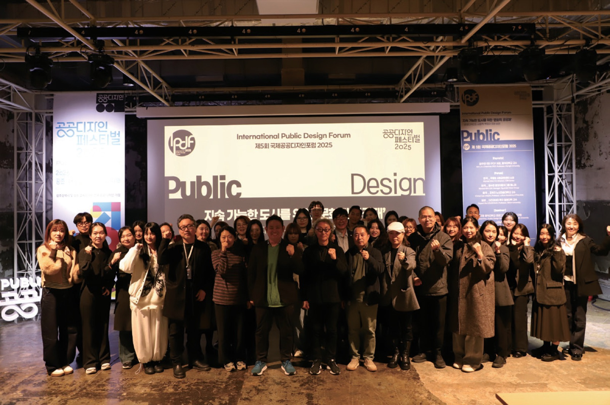
공공디자인연구센터와 함께한
석·박사 연구원들
재학생 성과 Students
- 행정안전부장관상김상아(박사과정) · 파주시 ‘모두의 순찰대’, 2024
- 공공디자인대상 학술부문 최우수상·우수상박재은·주하나 · 2026
- 공공디자인대상 연구부문 우수상김세훈(박사과정) · 2024
- 연구부문 최우수상·빅터 마골린상김상아·이주호(박사과정) · 2023
- 미국미술치료학회 AATA 학술발표주하나(박사과정) · 2023, 2025
졸업생 · 동문 Alumni
- 빅터 마골린상심윤서 · 2022 대한민국 공공디자인대상 학술부문
- 경기도 공공디자인 공모전 금상임성욱 (석사 7기) · 2022
- 강남 ESG 공공디자인 공모전석사·박사 3팀 수상 · 2022
- 한국국토정보공사 LX 공모전 우수상심윤서 · 2021
- 통합학술대회 발표이은영·이지영 · 2025 공공디자인 페스티벌
졸업 후 진로 Career
연구센터 프로젝트에 참여하며 쌓은 경험은 공공과 민간 양쪽으로 이어집니다.
지자체 공공디자인 행정가공공기관 디자인 전문직공공디자인 연구원
도시·공간 디자인 실무서비스디자이너총괄·자문 디자이너
대학 교원·연구자NPO·사회혁신 창업ESG·CSR 기획
History
연혁
News
소식
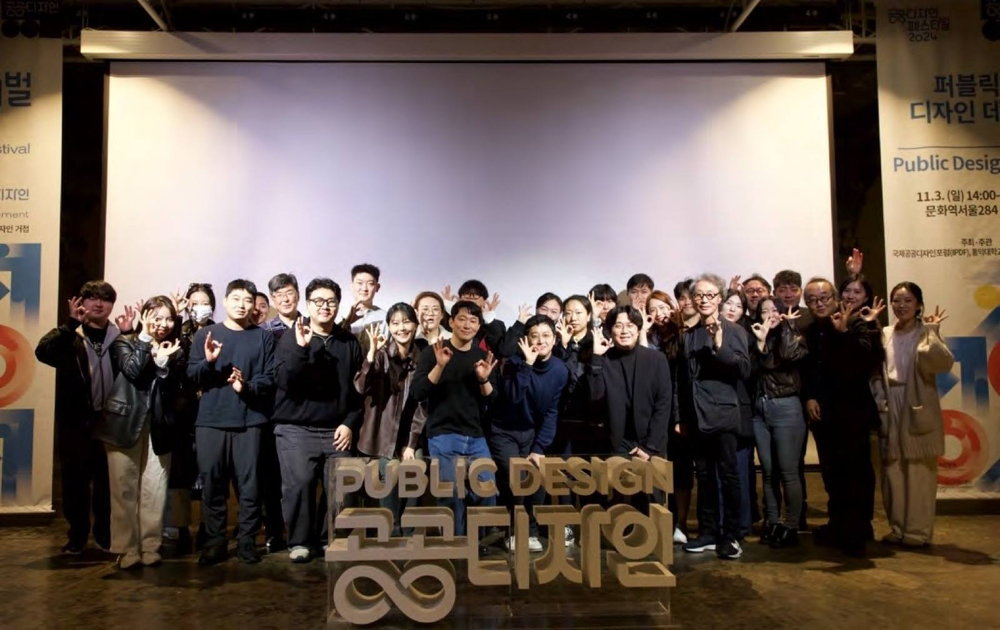
국제2026.07
공공디자인전공, 세계 사회혁신 디자인 네트워크 ‘DESIS Lab’ 지정
32개국 68개 대학·연구소가 참여하는 DESIS Network에 한국 대학 대표로 합류했습니다. 2022–2025년 20개 프로젝트의 증거 기반 디자인과 시민참여형 리빙랩 모델을 인정받았습니다.
교수진2026.09
보행디자인 권위자 오성훈 교수 임용
건축공간연구원(AURI) 부원장 출신, 2026년 2학기부터 합류했습니다.
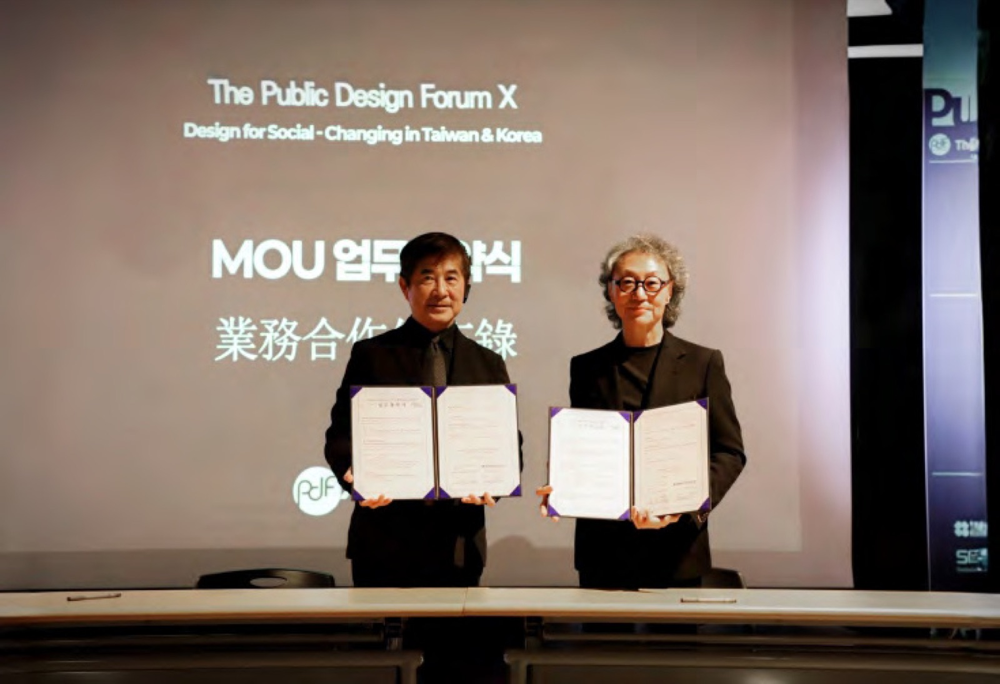
협약2025.10
국립대만디자인연구소(TDRI)와 디자인 연구 MOU
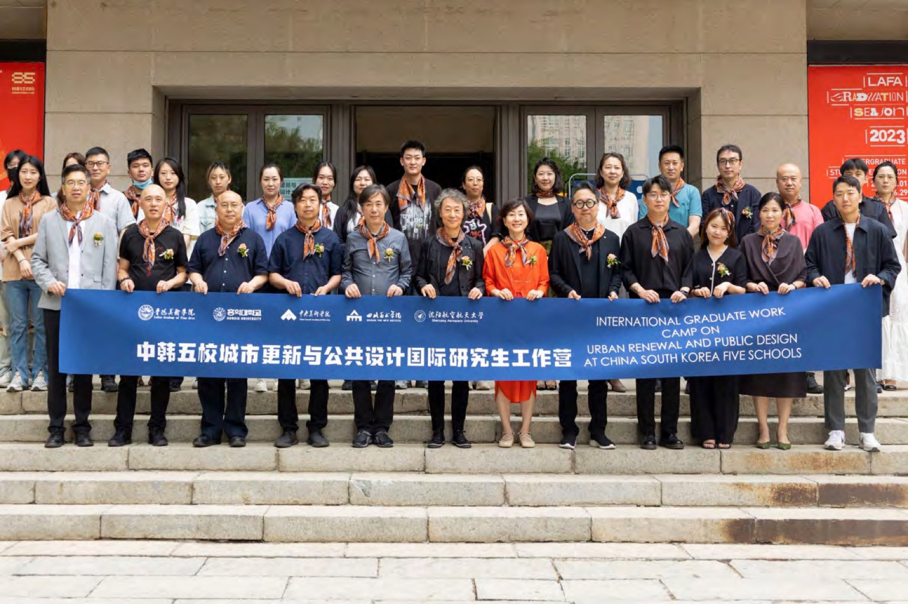
포럼2025.10
국제공공디자인포럼 IPDF 2025와 한중 공공디자인 워크숍
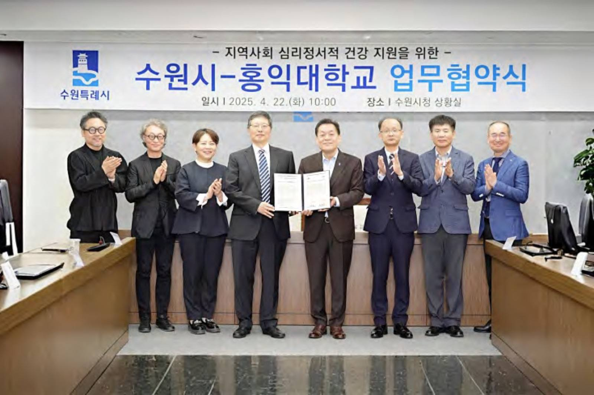
협약2025.04
수원시와 지역사회 심리·정서 건강 지원 업무협약
- 2026.09.18입학2027학년도 전기 대학원 신입생 모집 공고 (원서접수 9.30–10.14)
- 2026.07.20포럼공공디자인 포럼 2026 「디자인, 도시를 재생하다: 밀라노 디자인 위크」 개최
- 2026수상2026 대한민국 공공디자인대상 학술부문 최우수상·우수상, Platform 111 진흥원장상
- 2026.05.26강연이현성 교수, 도쿄 ‘2026 굿디자인코리아’ 초청 강연 「POLICY by DESIGN」
- 2026.01.27세미나동서대 디자인대학과 ‘포용하는 디자인’ 연합 세미나: 세계디자인도시(WDC) 부산
- 2025.11수상이현성 교수, 제27회 대한민국디자인대상 디자인 공로 부문 산업통상부장관 표창
- 2025.11포럼공공디자인포럼 PDF X 「안전을 위한 오사카 공공디자인」 쿠츠나 히로키
- 2025.01인증Public Design Governance 모델, UNESCO 지속가능발전교육(ESD) 공식프로젝트 재인증
- 2024.10위촉김주연 교수, 제1대 서울시 총괄 공공디자이너 위촉
- 2024.07발간공공디자인 뉴스레터 ‘The Public Design 365’ 100호 발간
Admission
입학 안내
여러분의 디자인에 공공의 가치를 더하세요,
여기 홍익에서.
도시와 일상의 문제를 디자인으로 풀고 싶은 분을 기다립니다. 디자인 전공자가 아니어도 괜찮습니다. 필요한 것은 공공에 대한 질문입니다.
모집 중
홍익대학교 대학원 입학 공지 · 2026.09.18
2027학년도 전기 대학원 신입생 모집
공공디자인 석사(산업미술대학원)·박사(일반대학원) 과정 모두 이번 모집에 포함됩니다.
- 원서접수9.30(수) 09:00 – 10.14(수) 24:00
- 서류제출10.15(목) 16:00까지
- 전형 (서울캠퍼스)11.14(토) – 11.15(일)
- 합격자 발표12.7(월) 18시 예정
일정은 공고 기준이며, 세부 전형과 지원 자격은 반드시 모집요강에서 확인해 주세요.
MASTER'S PROGRAM
석사과정
산업미술대학원 공공디자인전공
- 모집 시기전기(3월 입학) · 후기(9월 입학)
- 대상공공디자인·도시·공간·행정 분야에 관심 있는 학사 학위 소지자
- 학위 요건교과 이수 · 종합시험 · 학위논문
- 강점연구센터 프로젝트와 실무 연계
DOCTORAL PROGRAM
박사과정
대학원 디자인공예학과 공공디자인
- 모집 시기대학원 모집요강에 따름
- 대상공공디자인 연구자·정책 전문가를 목표로 하는 석사 학위 소지자
- 학위 요건교과 이수 · 자격시험 · 학위논문
- 강점국책·지자체 연구 참여, 국제 학술 발표
모집요강 확인
홍익대학교 대학원 입학 공지에서 해당 학기 모집요강을 확인합니다. 2027학년도 공고 →
상담
관심 연구 주제를 정리해 전공 사무실에 문의하면 상담을 받을 수 있습니다.
원서 접수
온라인으로 원서를 접수하고 서류를 제출합니다.
면접
연구계획과 공공디자인에 대한 관심, 경험을 이야기합니다.
합격 · 입학
신입생 오리엔테이션과 개강 세미나로 첫 학기를 시작합니다.
FAQ
자주 묻는 질문
디자인을 전공하지 않았는데 지원할 수 있나요?
네. 공공디자인은 디자인, 건축, 도시, 행정, 사회과학, 보건·복지가 만나는 분야입니다. 실제로 공무원, 연구원, 의료·복지 전문가 등 다양한 배경의 원우들이 함께 공부하고 있습니다. 세부 지원 자격은 해당 학기 모집요강을 확인해 주세요.
석사과정은 어떻게 졸업하나요?
교과목을 이수하고 종합시험(공공디자인기획론, 공공디자인정책·행정론)에 합격한 뒤 학위논문 심사를 통과하면 졸업합니다. 매 학기 논문발표 세미나와 논문인준식이 열립니다.
재학 중에 실제 프로젝트에 참여할 수 있나요?
공공디자인연구센터가 수행하는 지자체·공공기관 용역, 공공디자인 실험실, 페스티벌, 아카데미 운영에 석·박사 연구원으로 참여할 수 있습니다. 서울시 사회문제해결디자인 기본계획처럼 재학생이 참여연구진으로 이름을 올린 사례가 많습니다.
해외 교류 기회가 있나요?
국제공공디자인포럼 IPDF, 한·중·일 대학 연합 워크숍, 해외 학술답사(상하이, 도쿄, 오사카 등)가 열립니다. DESIS Network를 통해 해외 대학과 공동 프로젝트도 준비하고 있습니다.
공공디자인을 공부하면 어떤 일을 하게 되나요?
지자체와 공공기관의 공공디자인 행정가, 공공디자인 진흥계획·연구 용역을 수행하는 연구원, 도시·공간·서비스 디자인 실무자, 총괄·자문 디자이너, 대학 연구자 등으로 활동합니다.
입학 전에 전공 수업이나 행사를 경험해 볼 수 있나요?
공공디자인포럼(PDF X), 개강 세미나, 국제공공디자인포럼 등 많은 행사가 외부에 공개됩니다. 일정은 인스타그램과 소식 페이지에서 안내합니다.